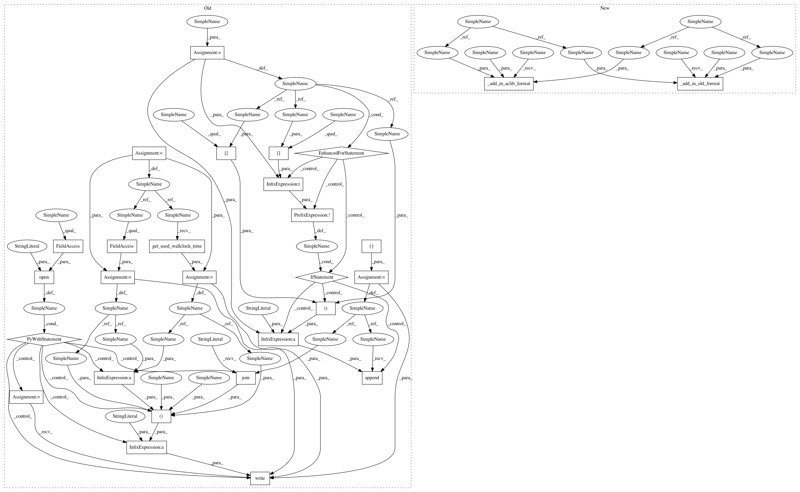

cfdb585bc795769c3244b69dc8982dfc377665d7,smac/utils/io/traj_logging.py,TrajLogger,add_entry,#TrajLogger#Any#Any#Any#,52
Before Change
incumbent: Configuration()
current incumbent configuration
conf = []
for p in incumbent:
if not incumbent[p] is None:
conf.append("%s="%s"" %(p,incumbent[p]))
ta_time_used = Stats.ta_time_used
wallclock_time = Stats.get_used_wallclock_time()
with open(self.old_traj_fn, "a") as fp:
fp.write("%f, %f, %f, %d, %f, %s\n" %(
ta_time_used,
train_perf,
wallclock_time,
incumbent_id,
wallclock_time - ta_time_used,
", ".join(conf)
))
After Change
current incumbent configuration
self._add_in_old_format(train_perf, incumbent_id, incumbent)
self._add_in_aclib_format(train_perf, incumbent_id, incumbent)
def _add_in_old_format(self, train_perf,
incumbent_id, incumbent):
In pattern: SUPERPATTERN
Frequency: 3
Non-data size: 28
Instances
Project Name: automl/SMAC3
Commit Name: cfdb585bc795769c3244b69dc8982dfc377665d7
Time: 2016-02-22
Author: lindauer@cs.uni-freiburg.de
File Name: smac/utils/io/traj_logging.py
Class Name: TrajLogger
Method Name: add_entry
Project Name: automl/SMAC3
Commit Name: f2066b0343de41d5355fa29ec17bb7cc0c8bd77e
Time: 2016-02-13
Author: lindauer@cs.uni-freiburg.de
File Name: smac/utils/io/traj_logging.py
Class Name: TrajLogger
Method Name: add_entry
Project Name: automl/SMAC3
Commit Name: a1c9f399f0f7cabb60c570d33da5708913451a42
Time: 2016-02-22
Author: lindauer@cs.uni-freiburg.de
File Name: smac/utils/io/traj_logging.py
Class Name: TrajLogger
Method Name: add_entry
Project Name: automl/SMAC3
Commit Name: cfdb585bc795769c3244b69dc8982dfc377665d7
Time: 2016-02-22
Author: lindauer@cs.uni-freiburg.de
File Name: smac/utils/io/traj_logging.py
Class Name: TrajLogger
Method Name: add_entry